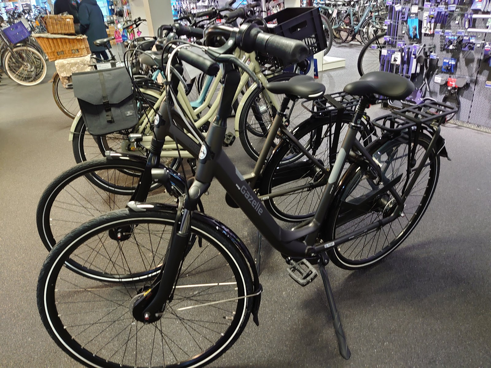
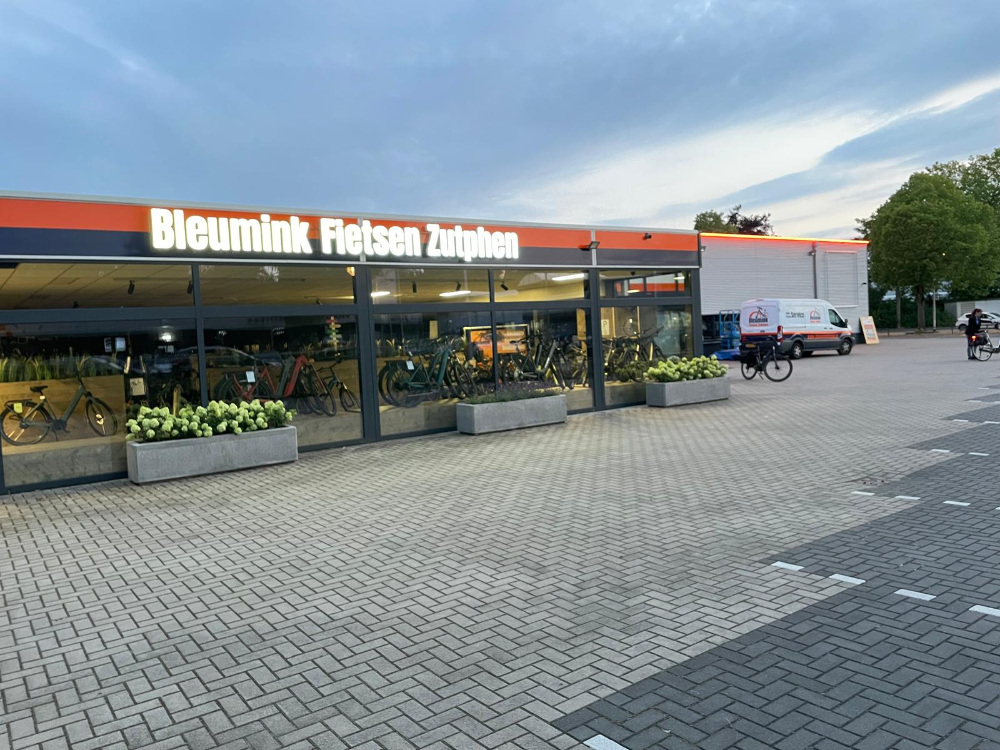
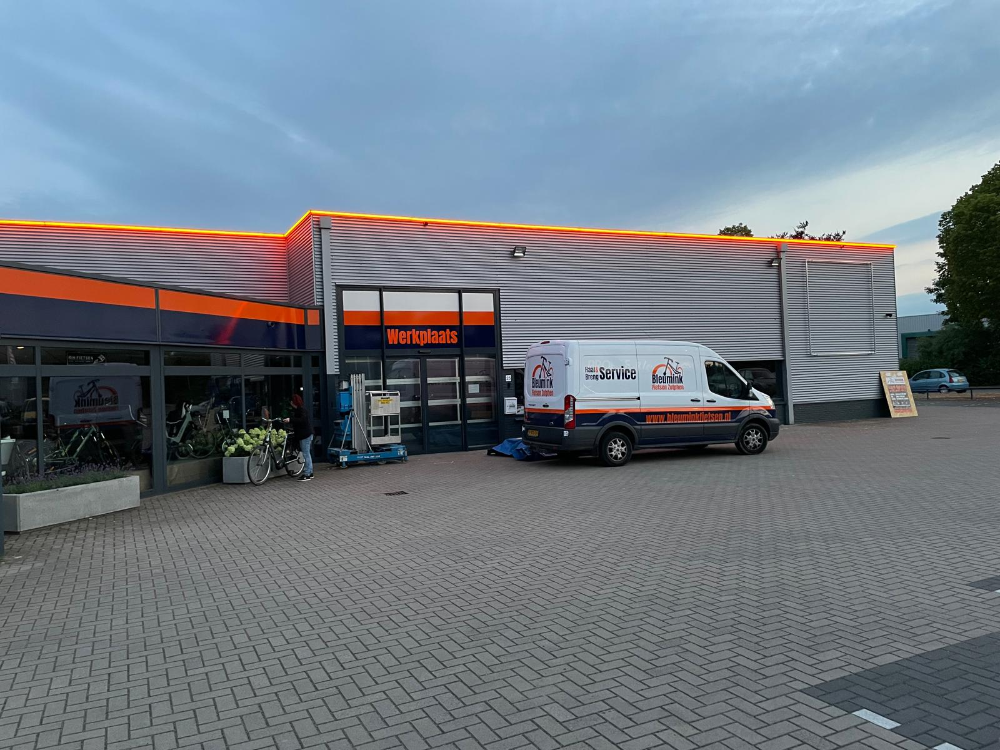
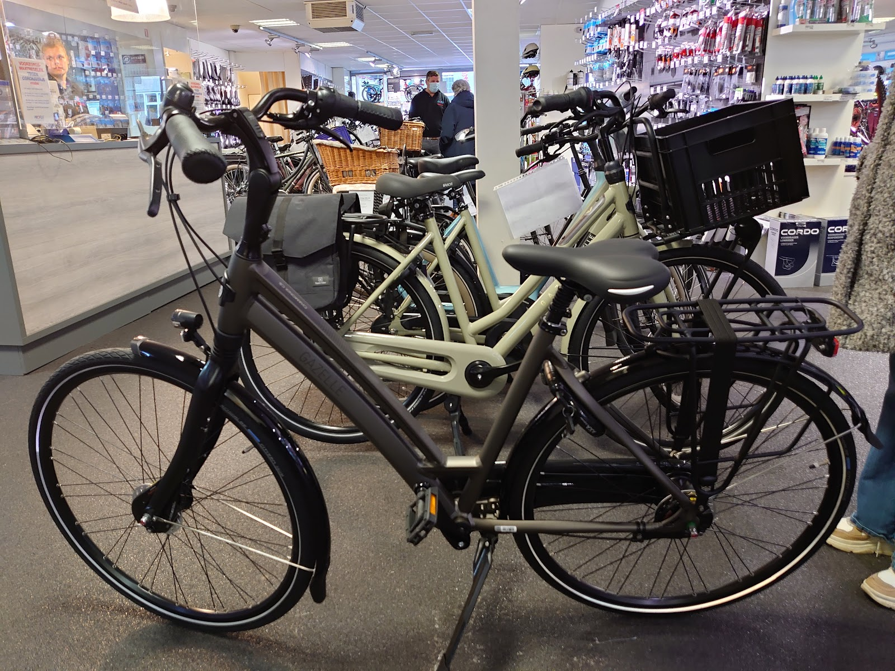
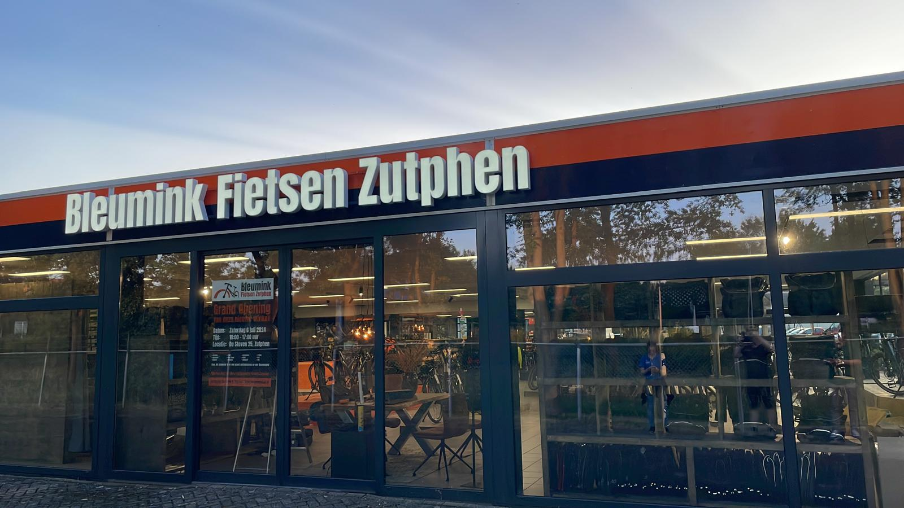

De winkel
Fietsen, accessoires, onderdelen en fietskleding. Kom gerust langs voor advies.
| Maandag | Gesloten |
| Dinsdag | 09:00 - 18:00 |
| Woensdag | 09:00 - 18:00 |
| Donderdag | 09:00 - 18:00 |
| Vrijdag | 09:00 - 18:00 |
| Zaterdag | 09:00 - 17:00 |
| Zondag | Gesloten |

Fietsenspeciaalzaak met eigen werkplaats in Zutphen. Goed advies, een ruime keus en monteurs die je fiets snel weer op de weg hebben.
De werkplaats begint een uur eerder en is op zaterdag dicht. Tussen 12.00 en 12.30 uur zijn we altijd gesloten voor de lunchpauze.

Fietsen, accessoires, onderdelen en fietskleding. Kom gerust langs voor advies.
| Maandag | Gesloten |
| Dinsdag | 09:00 - 18:00 |
| Woensdag | 09:00 - 18:00 |
| Donderdag | 09:00 - 18:00 |
| Vrijdag | 09:00 - 18:00 |
| Zaterdag | 09:00 - 17:00 |
| Zondag | Gesloten |

Reparatie en onderhoud door ervaren monteurs. Maak even een afspraak, dan staat er iemand voor je klaar.
| Maandag | Gesloten |
| Dinsdag | 08:00 - 17:00 |
| Woensdag | 08:00 - 17:00 |
| Donderdag | 08:00 - 17:00 |
| Vrijdag | 08:00 - 17:00 |
| Zaterdag | Gesloten |
| Zondag | Gesloten |
Een ruim aanbod, en sommige fietsen laten we op maat maken. Samen zoeken we de fiets die bij jou past.
Plus accessoires, onderdelen, fietskleding, kinderzitjes, tassen en fietsendragers.
Batavus, Sparta, Kalkhoff, Cube, Van Raam, Trek, Cortina, Gazelle, RIH, Qio, Victoria, Brompton, Puky, Riese und Müller, Huka en Diamant.

Snelle en vakkundige reparaties en onderhoud in onze eigen werkplaats. Onze monteurs brengen je fiets weer in topconditie.
Geen tijd om langs te komen? Wij halen je fiets op en brengen hem gerepareerd terug. Betaalbaar en zonder dat het je een middag kost.
Een nieuwe fiets zonder groot bedrag ineens. Met een leasefiets via Bleumink rijd je altijd, zonder verrassingen bij reparaties of onderhoud.
Stadsfiets, e-bike, bakfiets of racefiets: je verzekert hem bij ons via ANWB, Vico of ENRA.
Je fiets veilig mee op vakantie. We hebben dragers van XLC, Spinder, Thule en Yakima en helpen je kiezen welke op jouw auto past.
Maak van je vertrouwde fiets een e-bike met een Pendix-ombouwkit: een stille middenmotor die je soepel ondersteunt, ook tegen de wind in.
Meer dan 30 jaar ervaring
Shimano-specialist
Erkend Bovag-bedrijf
Erkend RDW-bedrijf
4,5 van 5 sterren uit 191 Google-reviews
"Weer een mooie fiets gekocht bij Bleumink. En weer topservice van de medewerkers, zelfs zo dat de fiets nog wat eerder geleverd werd zodat hij mee kon op vakantie. De medewerkers zijn altijd super klantvriendelijk, de kwaliteit is hoog, ervwordt uitstekend contact gehouden en bijvoorbeeld altijd een leenfiets mogelijk."
"Het was zo fijn, Mitch heeft mij zo goed geholpen, alle complimenten voor hem maar ook de andere medewekers en collega'swaren uitermate behulpzaam en klantvriendelijk. Ik heb een geweldige fiets bij jullie gekocht. Hartelijk dank."
"Inmiddels meerdere fietsen gekocht bij Bleumink en ik ben zeer tevreden over de kwaliteit,de klantvriendelijkheid van van dit bedrijf."

Op een goed bereikbare plek in Zutphen. Bel gerust als je eerst iets wilt vragen.